AM
Preparación para obtener el permiso AM, con formación teórica y práctica adaptada al proceso de aprendizaje. Te acompañamos durante todo el proceso para que llegues preparado al examen.
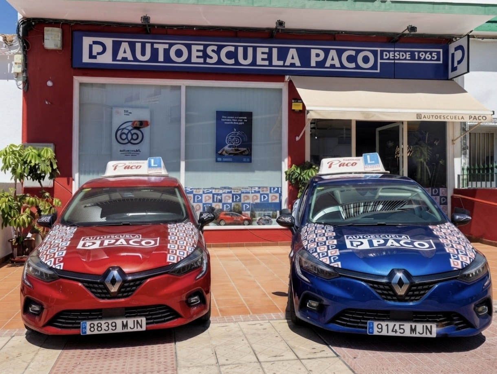
Desde 1965, enseñando a conducir en Rota con experiencia, tecnología y un trato cercano.
Más de 60 años formando conductores · Permisos AM y B · Profesores titulados
Autoescuela Paco forma parte de la historia de la formación vial en Rota y continúa mirando hacia el futuro.
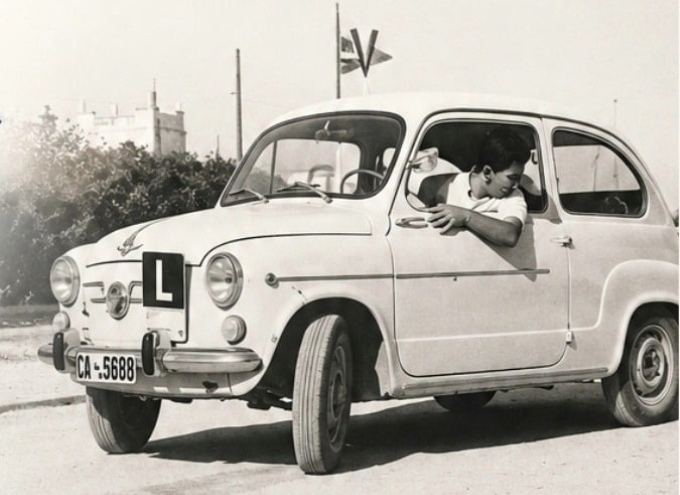
Autoescuela Paco nació en Rota en 1965. Desde entonces, generaciones de alumnos han pasado por nuestras aulas y vehículos para aprender a conducir.
La experiencia acumulada durante más de seis décadas convive hoy con nuevas herramientas, tecnología y una forma de trabajar pensada para las necesidades actuales de los alumnos.
Nuestro objetivo es ofrecer una formación clara, cercana y acompañada durante las distintas etapas del permiso.
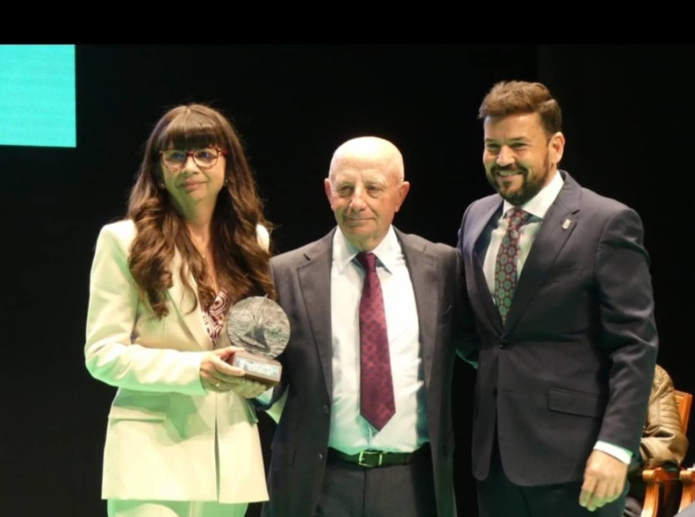
En 2025, Autoescuela Paco fue reconocida en Rota durante la III Gala de "Lo Nuestro", un homenaje al comercio y la empresa local.
El reconocimiento puso en valor una trayectoria iniciada en 1965 y una historia ligada a varias generaciones de roteños.
III Gala "Lo Nuestro" · Homenaje al comercio y empresa local · Rota, 2025
La historia de Autoescuela Paco también merece ser contada.
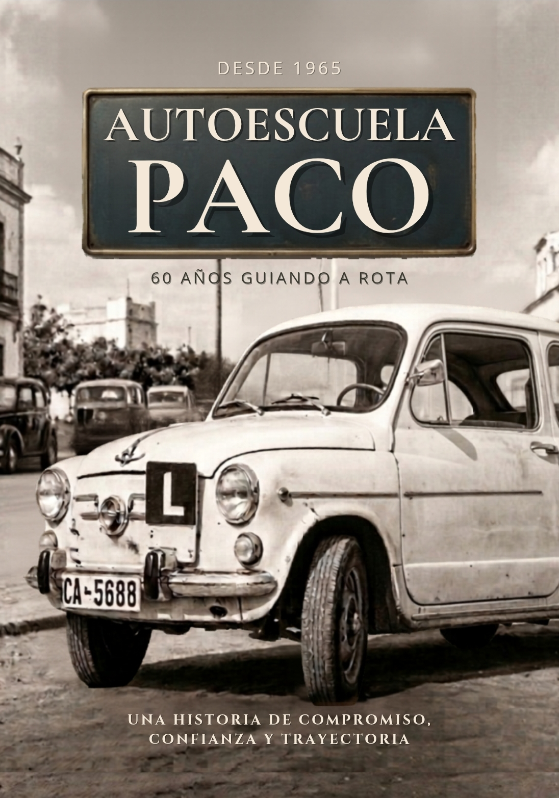
Descubre nuestra revista conmemorativa por los 60 años de Autoescuela Paco. Un recorrido por nuestra historia desde 1965, nuestros fundadores, la evolución de la autoescuela, nuestros vehículos, nuestros profesores y algunos de los momentos que forman parte de nuestra trayectoria.
En Autoescuela Paco te ayudamos a prepararte para obtener los permisos AM y B, tanto si empiezas desde cero como si quieres volver a conducir con mayor seguridad y confianza. También ofrecemos clases de reciclaje para conductores que quieren recuperar práctica o volver a ponerse al volante después de un tiempo.
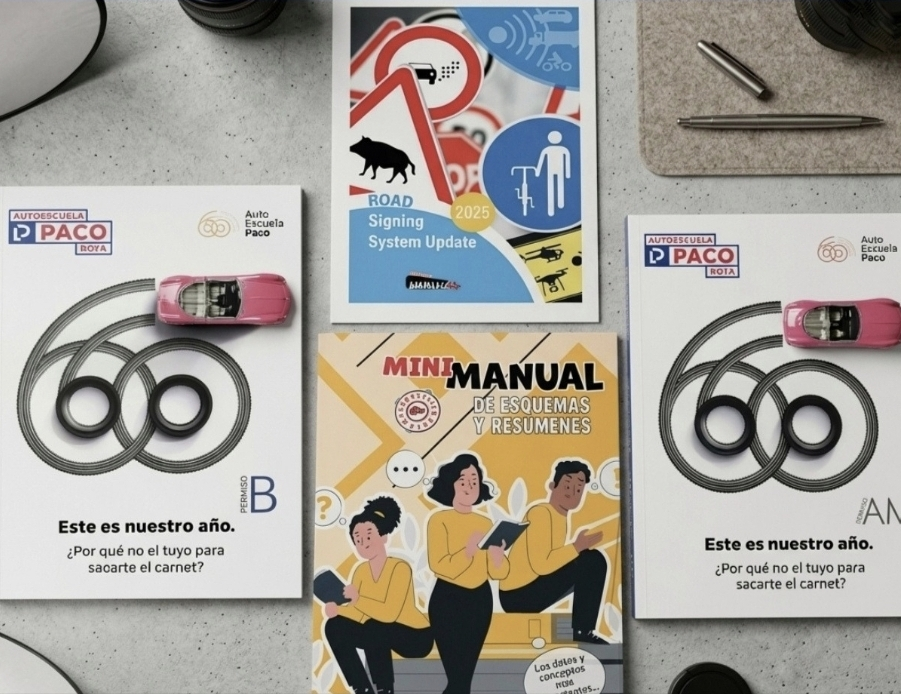
Preparación para obtener el permiso AM, con formación teórica y práctica adaptada al proceso de aprendizaje. Te acompañamos durante todo el proceso para que llegues preparado al examen.
Preparación para obtener el permiso B en Rota, con formación teórica, plataforma de test disponible 24/7 y clases prácticas adaptadas al ritmo y las necesidades de cada alumno.
Clases dirigidas a conductores que llevan tiempo sin conducir, quieren recuperar práctica o sienten inseguridad al volante. Contamos con profesores con formación y conocimientos en amaxofobia, que valoran cada caso para adaptar las clases a las necesidades de cada persona.
En Autoescuela Paco la formación teórica combina clases presenciales, práctica de test, tecnología y atención directa de nuestros profesores. Nuestro objetivo es que no te limites a memorizar respuestas, sino que entiendas los contenidos y llegues al examen bien preparado.
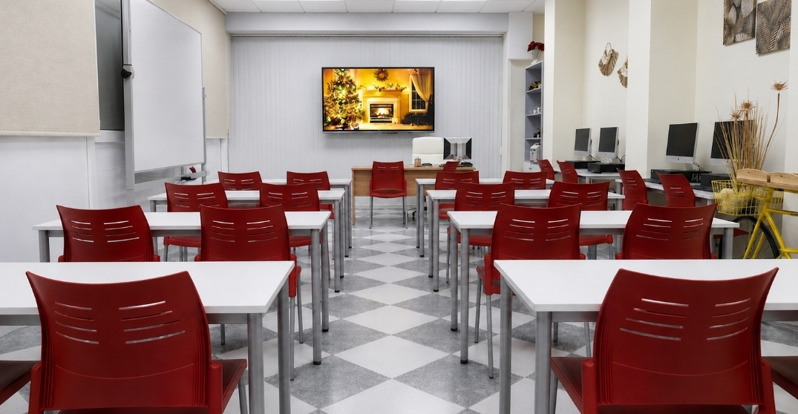
Una parte esencial de la formación es aprender a desenvolverse con seguridad y confianza al volante. En Autoescuela Paco adaptamos las clases al nivel y evolución de cada alumno, avanzando de forma progresiva hasta preparar las situaciones necesarias para afrontar el examen con seguridad.
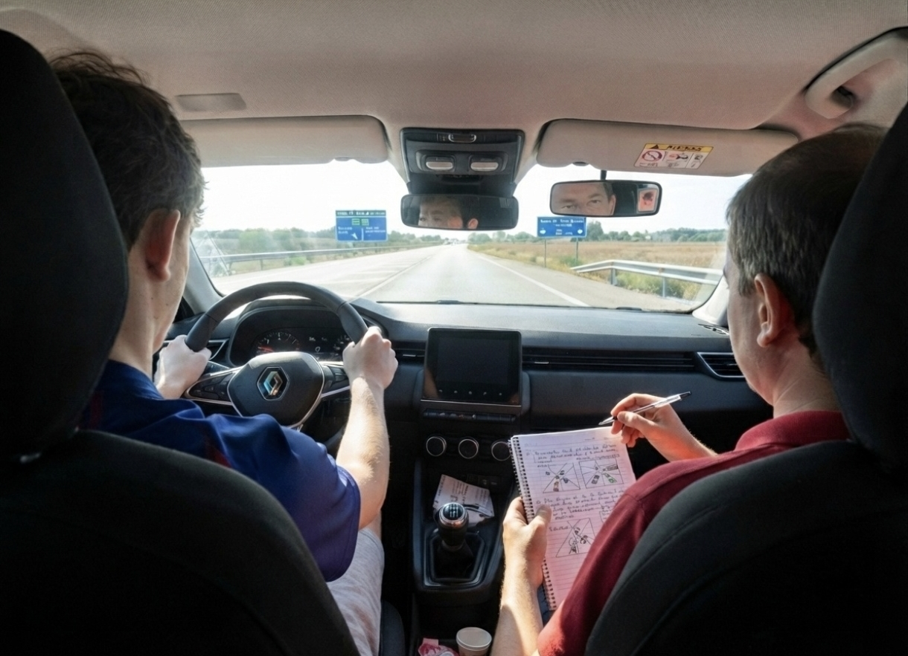
Disponemos de un amplio horario para las clases prácticas: de 7:30 a 14:30 y de 15:30 a 20:30, facilitando la organización de las clases y adaptándonos, dentro de nuestras posibilidades, a las necesidades de cada alumno.
La comunicación con el profesor no termina cuando acaba la clase. Puedes plantearle tus dudas y consultar aquello que necesites por teléfono para continuar mejorando tu preparación, manteniendo un contacto cercano durante todo el proceso.
La finalidad es que el alumno pueda entender qué debe mejorar y cómo continuar progresando.
Las clases se adaptan al nivel y evolución de cada alumno. Comenzamos trabajando las bases de la conducción y vamos incorporando progresivamente nuevas situaciones, maniobras y recorridos para ganar seguridad y autonomía al volante.
El acompañamiento también forma parte de nuestra manera de trabajar.
Autoescuela Paco se hace cargo del desplazamiento de los alumnos hasta la zona de examen.
Además, procuramos acompañar al alumno antes y después de sus exámenes teórico y práctico.
Siempre que sea posible, el alumno estará acompañado por un profesor cualificado, para ofrecer apoyo y resolver las dudas que puedan surgir.
Nuestros vehículos de formación están preparados para acompañarte durante tu aprendizaje, con vehículos adecuados para las clases prácticas y el proceso de preparación para el examen.
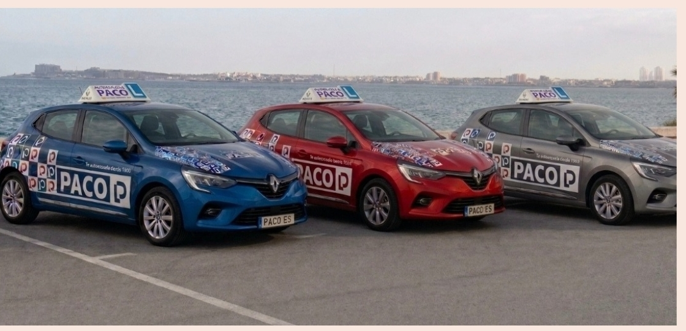
Cuatro profesores cualificados trabajando como equipo para acompañar al alumno durante su formación.
Más de 20 años de experiencia demostrable en el equipo y coordinación directa entre profesores.
El equipo de Autoescuela Paco está formado por cuatro profesores cualificados: Noelia, Rosa, Juan y Dani.
Dos desarrollan su actividad en el centro y dos trabajan habitualmente en los vehículos de formación.
El equipo cuenta con más de 20 años de experiencia demostrable en el ámbito de la formación vial.
La experiencia permite conocer diferentes ritmos de aprendizaje y adaptar la explicación a cada alumno.
Los profesores mantienen comunicación directa entre ellos para comentar situaciones, resolver dudas y ayudarse mutuamente.
Esta coordinación permite compartir criterios y buscar la mejor forma de explicar o trabajar cada situación con el alumno.
Queremos que el alumno sepa quién está detrás de su formación y pueda comunicarse con el equipo cuando necesite ayuda.
Hemos cuidado y renovado nuestras instalaciones para ofrecer un entorno cómodo y adecuado para la formación.
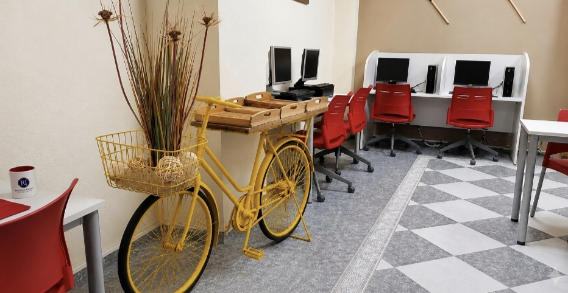
El centro ha sido renovado y cuidado para ofrecer un espacio agradable y cómodo durante la formación.
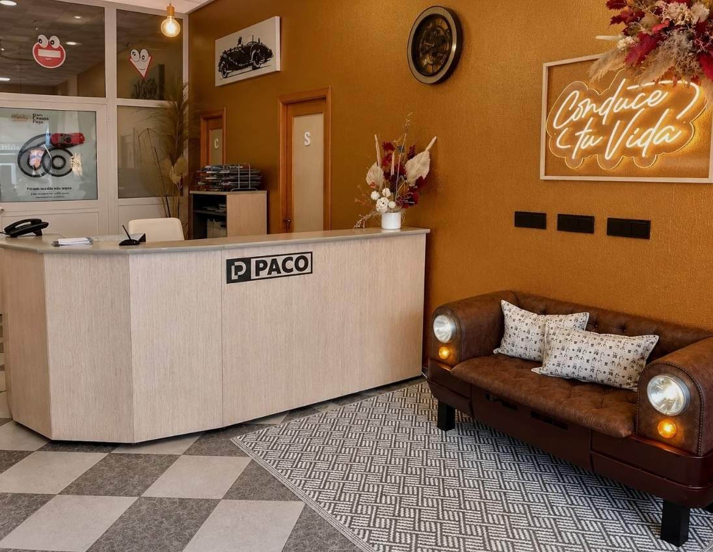
Disponemos de una zona de recepción y espera pensada para que el alumno pueda estar cómodo antes de sus clases.
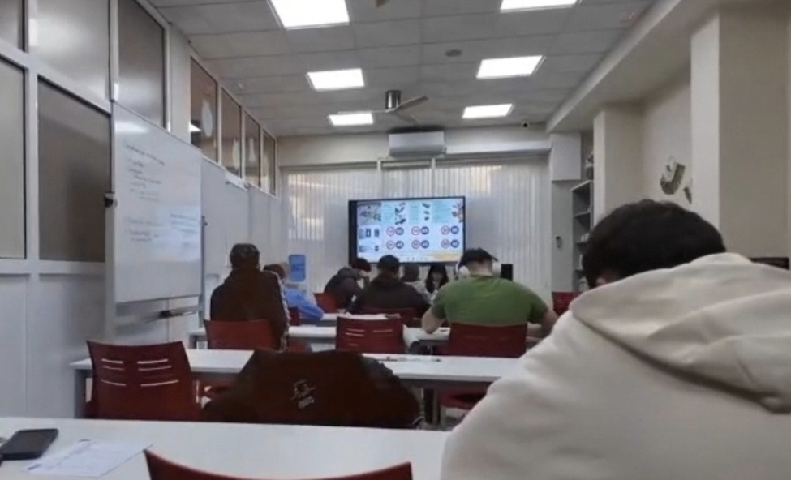
Utilizamos una pantalla táctil como apoyo visual para explicar contenidos durante las clases.
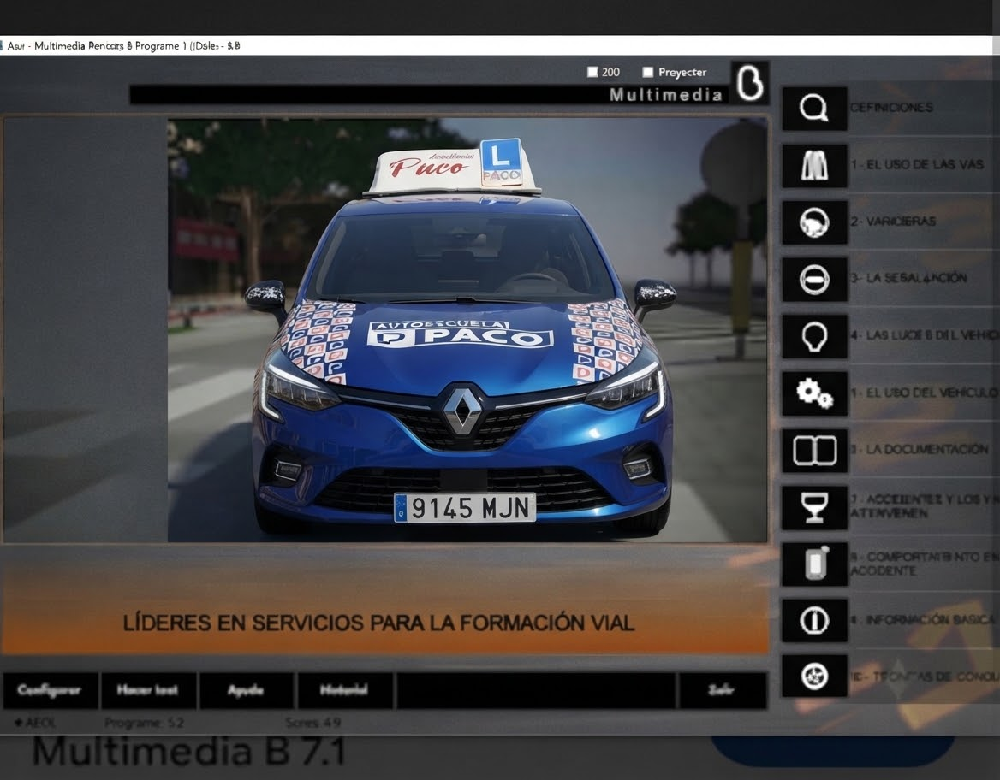
Los alumnos pueden continuar su preparación online las 24 horas, los 7 días de la semana.
Cada parte del proceso tiene su función: aprender la teoría, practicar, resolver dudas y llegar preparado al examen.
Intentamos conocer las necesidades de cada alumno para orientar la formación y resolver las dificultades que puedan aparecer.
La comunicación entre los cuatro profesores facilita que las cuestiones relacionadas con el aprendizaje puedan compartirse y abordarse de forma coordinada.
Plataforma online, test y pantalla táctil forman parte de las herramientas que utilizamos para complementar la enseñanza presencial.
En nuestro blog explicamos cómo es el proceso en Autoescuela Paco: la formación teórica, las clases prácticas, los exámenes, los permisos y otras cuestiones que pueden surgir antes o durante el aprendizaje.
VISITAR EL BLOG →Puedes conocer novedades, alumnos que consiguen su permiso y otros contenidos de Autoescuela Paco.
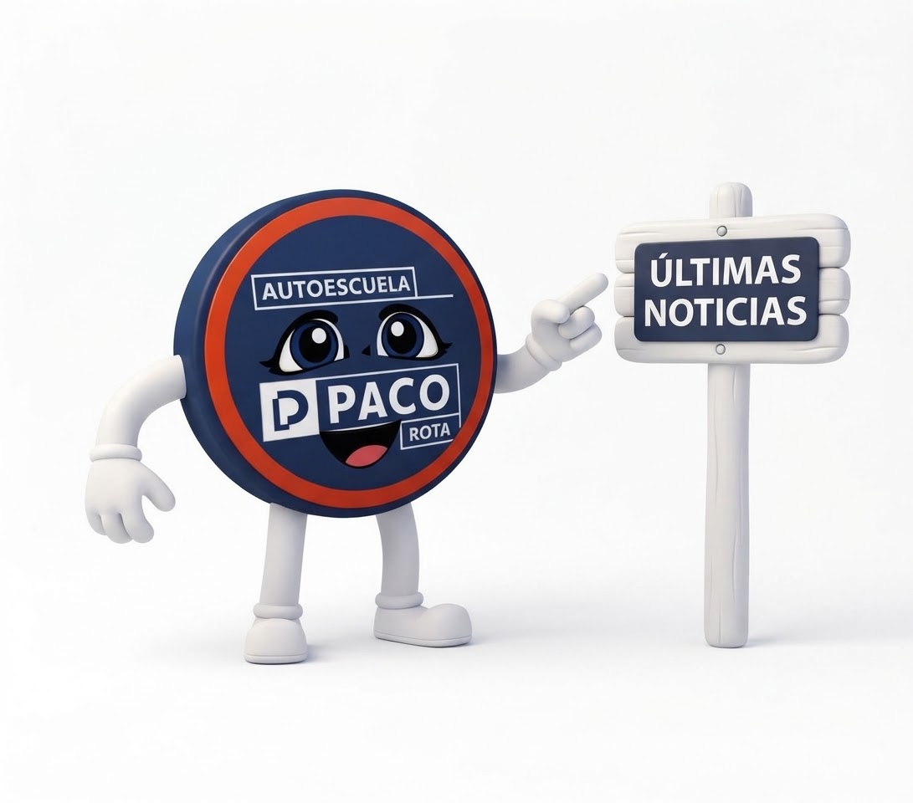
Entérate de nuestras últimas novedades, eventos y publicaciones en directo.
Si quieres conocer Autoescuela Paco, resolver una duda o comenzar tu formación, puedes contactar con nosotros.